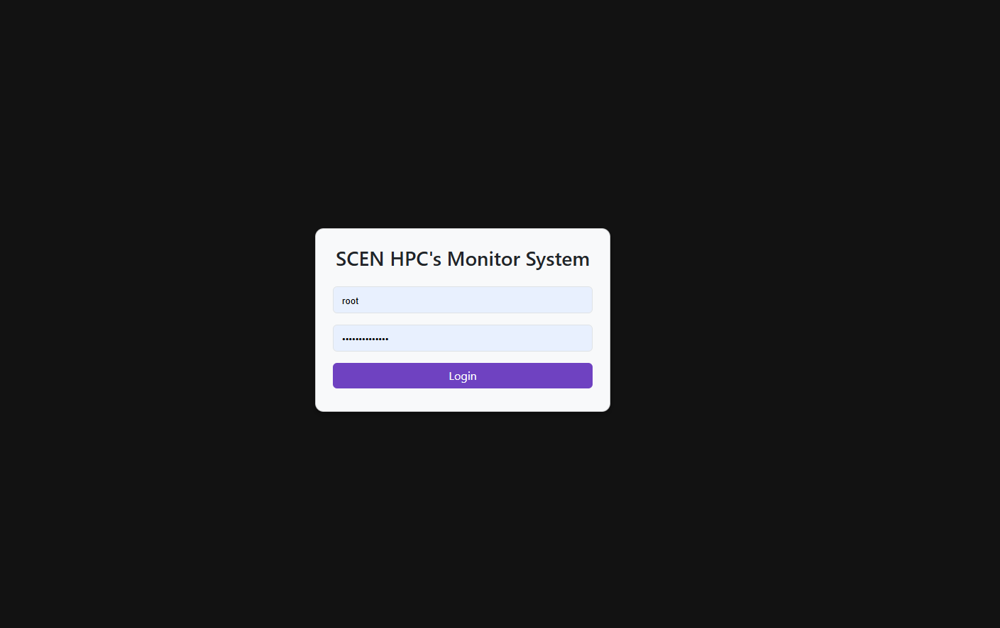
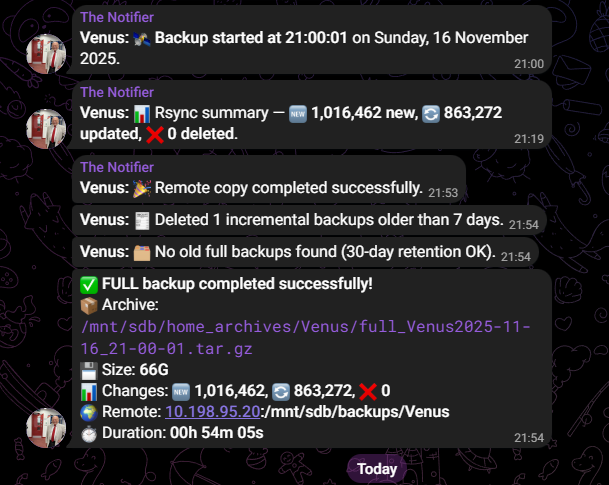
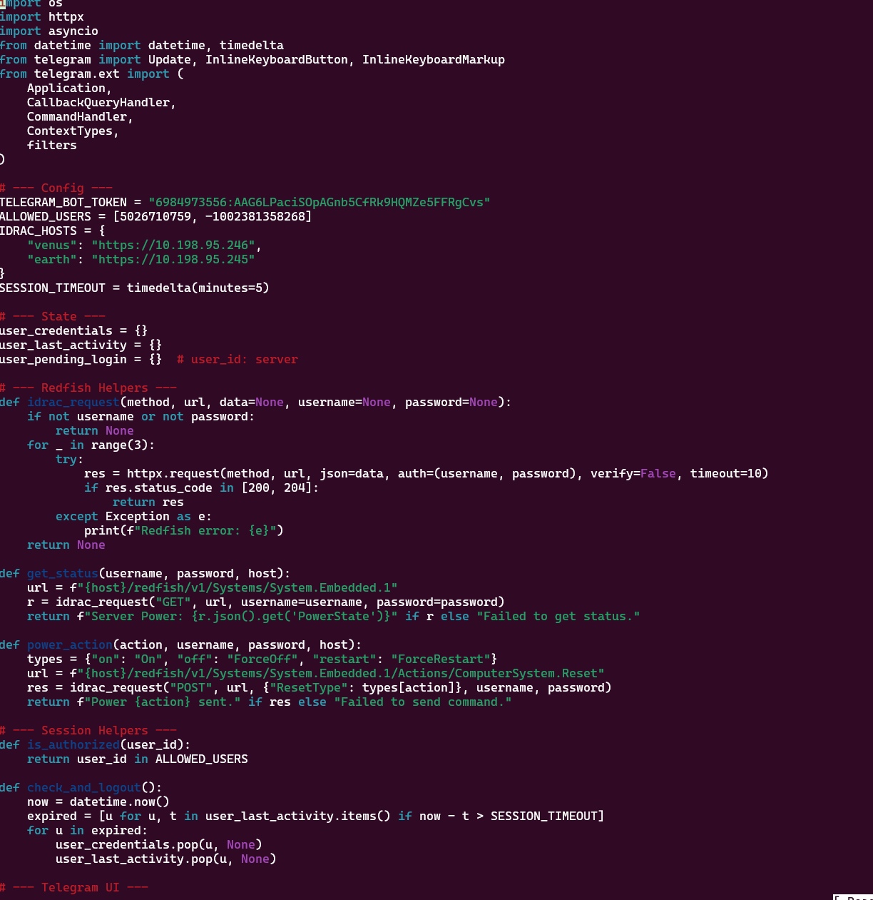
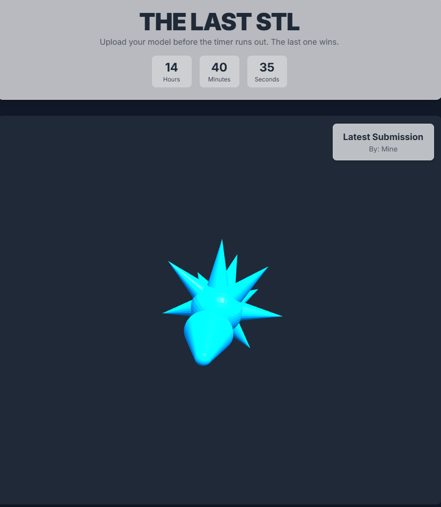
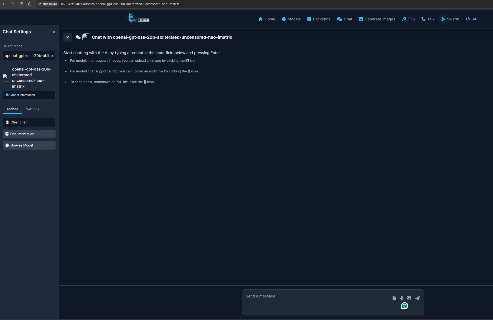
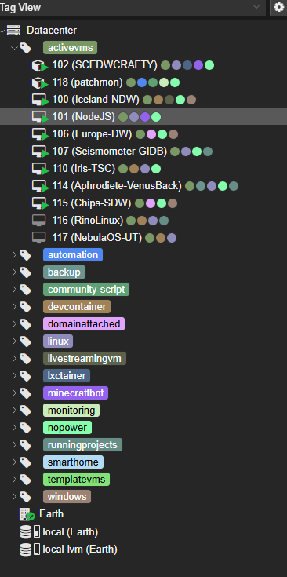
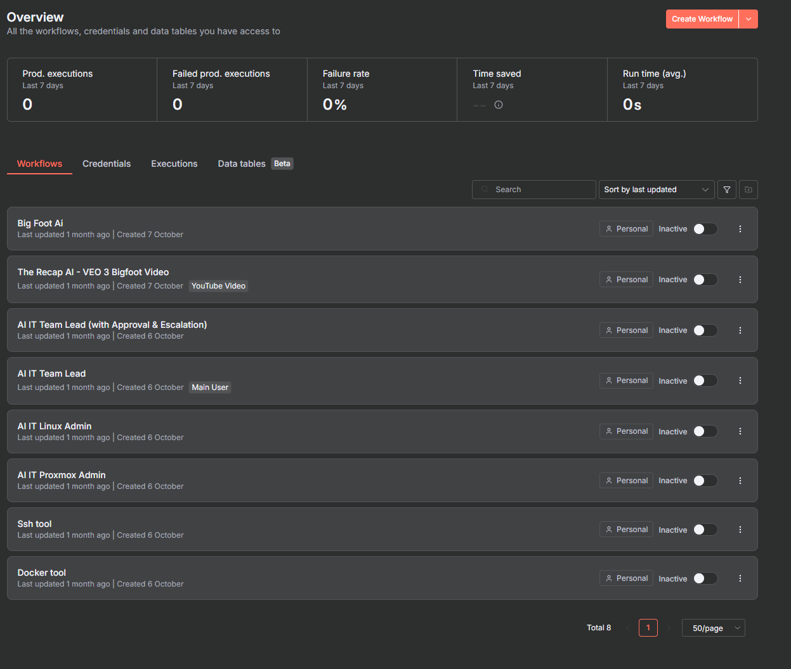
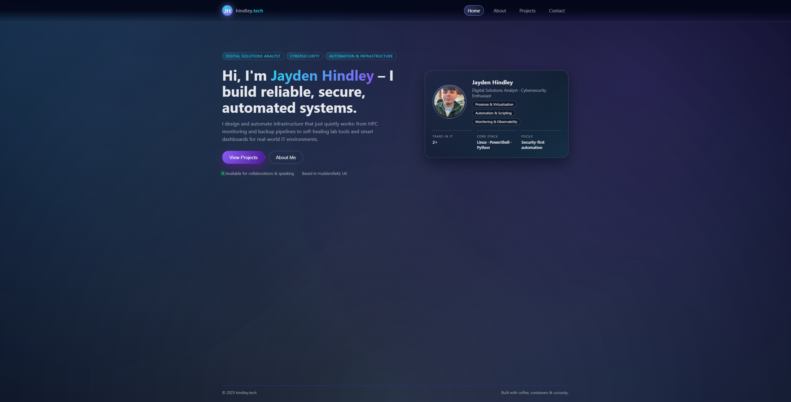

HPC Monitoring Dashboard
Lightweight Flask app that pings lab machines, parses login logs, and exposes real-time status and uptime data via a clean web UI.
A mix of infrastructure, automation, and “I wonder if I can make this do that?” experiments.

Lightweight Flask app that pings lab machines, parses login logs, and exposes real-time status and uptime data via a clean web UI.

Bash + rsync + pigz scripts with rotation, Telegram notifications, and separate local/remote tiers for resilient backups.

Control Dell servers from Telegram with safe power actions, graphs, and status history using Redfish APIs for out-of-band management.

Automated STL to GCODE flow with watchers, slicers, OctoPrint upload, and chat notifications for print status.

GPU-accelerated LocalAI deployments with Docker, P2P features, and custom endpoints wired into existing tools and bots.

Proxmox VE virtualisation with GPU passthrough, high-availability VMs, and automated backups, tightly integrated with existing systems and workflows.

n8n automation workflows with custom triggers, API integrations, and event-driven logic, seamlessly connected to existing systems, bots, and infrastructure.

A growing hub for my projects, experiments, and tools – designed to feel like a calm control panel for everything I build.